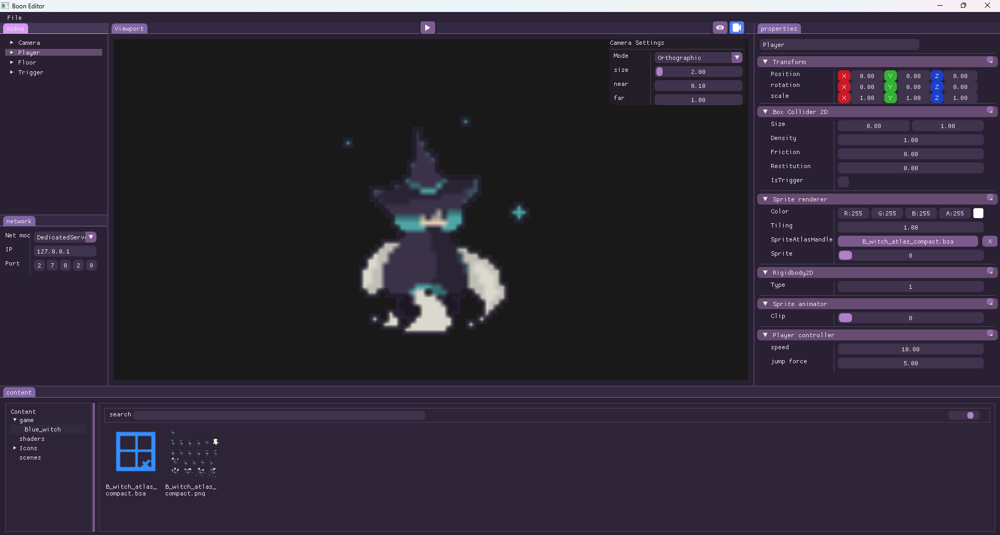
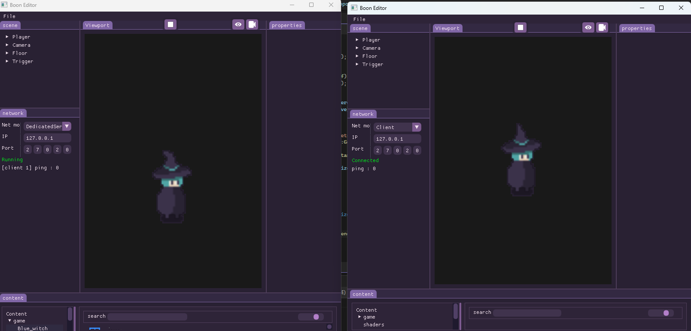

Boon Engine
An actively developed, compact multiplayer game engine I built to explore engine architecture, editor tooling and networked gameplay. The codebase combines a small renderer and physics layer, a desktop editor and a sandbox, and a networking stack that uses Valve's GameNetworkingSockets for low-level transport.
View the Boon Engine repository on GitHub


Overview
Boon Engine is a hands-on project that focuses on the engineering problems behind multiplayer 2D games rather than delivering a commercial feature set. The repository contains a runtime, a desktop editor and a sandbox module for rapid iteration. Key subsystems present in the code are a component-oriented scene model with generated components and reflection, a sprite and tilemap renderer with batching, Box2D-based 2D physics, an asset pipeline with importers and a registry, and a networking layer built on top of GameNetworkingSockets.
Interesting technical highlights
-
Networking and transport — low-level transport is integrated in
Boon/src/Platform/Steam/SteamNetDriver.cppusing Valve's GameNetworkingSockets. The project builds higher-level abstractions such asNetConnection,NetPacketandNetRPCand uses a scene-level replication layer implemented inNetRepRegistryandNetRepCore. -
Replication and serializers — the engine demonstrates component-level serialization with concrete serializers like
NetTransformandNetRigidbody2DSerializer, showing how component state is packaged for transmission and applied on the receiving side. -
Reflection and generated components — a small reflection layer (
BClass,BProperty,BFunction) and generated files (for exampleGenerated_Components.cpp) let the editor, serializer and networking code reuse the same metadata, reducing duplication and simplifying iteration. -
Editor and asset tooling — the repository includes an editor with asset panels, tilemap and sprite atlas editors, plus an
AssetLoaderandAssetRegistryto manage imported content and feed the live sandbox. -
Rendering and physics integration — a minimal renderer exposes vertex/index buffers, uniform buffers and render batches used by the tilemap and sprite systems, while Box2D is wrapped by a
PhysicsWorld2Dabstraction and exposed through serializable rigidbody and collision components.
What I was trying to solve
I wanted a compact, end-to-end environment to experiment with multiplayer concerns: efficient component serialization, a replication pipeline that maps naturally to an entity-component model, and editor tooling that supports fast content iteration. Choosing GameNetworkingSockets as the transport gives me precise control over reliability and latency characteristics, which is important when prototyping prediction, interpolation and synchronization strategies.
What I learned
Building Boon Engine reinforced how many small systems must work together for multiplayer to feel robust: clear transport abstractions, compact and stable serialization, and editor workflows that keep iteration tight. Integrating network transport and exposing replication primitives highlighted practical trade-offs between packetization, reliability and debugging complexity. The reflection and generated-component approach proved valuable for sharing code between editor and runtime. The project is actively developed and serves as a practical testbed for future experiments in prediction, interpolation and deterministic synchronization.